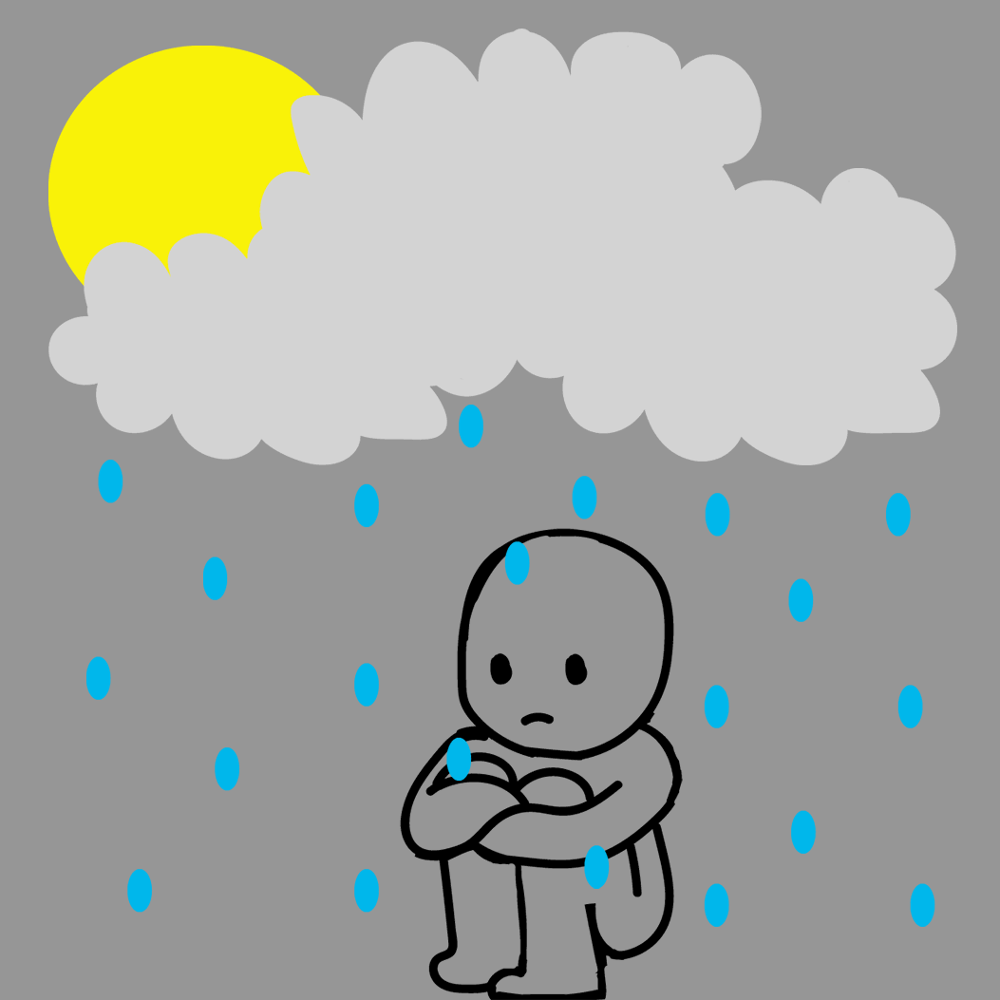

Depression and anxiety has affected millions of people in the US, and throughout the globe, especially among young people. I interviewed Luis, who is 18 years old and Jocelin, who is 20 years old. Luis is a freshman at LaGuardia Community College, majoring in Film and Television. Joceline is a sophomore at Kean University, majoring in Elementary Education Teacher of Students w/ Disabilities. When people talk about how they’ve struggled with depression and anxiety, it sends an important message like how it’s okay to talk about it and make them feel heard and understood by others. You can struggle and still have a meaningful life. I hope my project helps others to not be afraid to open up and no matter who you are, it’s important to seek help.
